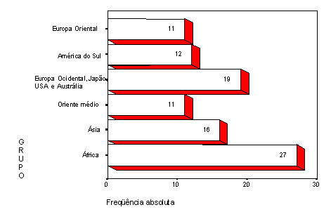
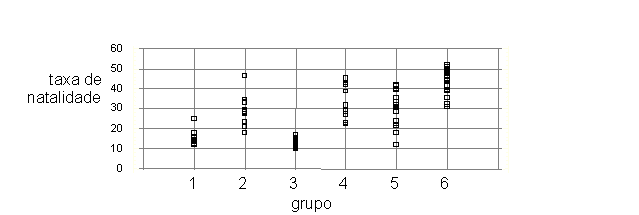
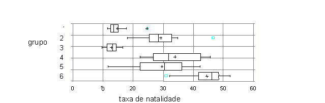

|
Atas da
Conferência Internacional "Experiências e Expectativas do Ensino de Estatística -
Desafios para o Século XXI" |
|
Atas da
Conferência Internacional "Experiências e Expectativas do Ensino de Estatística -
Desafios para o Século XXI" |
ANÁLISE EXPLORATÓRIA DE DADOS NOS CURSOS DE SEGUNDO GRAU
RESUMO
A análise exploratória de dados, introduzida por Tukey (1962; 1970) tem se expandido como filosofia de aplicação da estatística, devido principalmente à disponibilidade de instrumentos e softwares estatísticos com possibilidades de representação gráfica e tratamento de conjuntos de dados variados. As possibilidades didáticas da análise exploratória de dados se devem à simplicidade do aparato matemático requerido, à importância dada hoje em dia na estatística, aos sistemas matemáticos de representação múltiplas e à solução de problemas, às conexões com outros temas do currículo, ao trabalho em equipe e à possibilidade de desenvolver projetos por parte dos alunos (Batanero, Estepa e Godino, 1992).
O objetivo desta oficina é de apresentar aos professores exemplos de atividades da análise exploratória de dados que possam utilizar com seus alunos do segundo grau. Um projeto de análise de dados, a partir de um arquivo obtido na Internet, servirá para analisar os principais conteúdos da análise de dados abordáveis neste nível de ensino, mostrar exemplos de questões que requeiram o uso de conceitos e técnicas estatísticas, descrever algumas dificuldades previsíveis dos alunos com os mesmos e sugerir critérios para o trabalho em aula com os alunos. A metodologia da oficina alternará o trabalho em grupo e a discussão dos professores e o resumo de alguns pontos chaves pela coordenadora. Propõe-se dividir a oficina em duas sessões com um breve intervalo para descanso.
1. Um exemplo de projeto
A atividade se desenvolve em torno de um projeto, a partir de um arquivo que contém dados de 97 países e que foi adaptado daquele preparado por Roucenfield (1995), que usou como fontes Day (1992) e UNESCO (1990).
Este arquivo foi retirado de Internet, do servidor do Journal of Statistical Education (
http://www2.ncsu.edu/ncsu/pams/stat/info/jse/homepage.html) e contém as seguintes variáveis, referentes ao ano de 1990:1 = Europa Oriental
2 = América do Sul
3 = Europa Ocidental, América do Norte, Japão, Austrália e Nova Zelândia
4 = Oriente Médio
5 = Ásia
6 = África
Adicionamos o número de habitantes em 1990 em milhares de pessoas (População), extraído do anuário publicado pelo jornal espanhol "El País". A seguir listamos os dados:
País |
Grupo |
Taxa de natalidade |
Taxa de mortalidade |
Mortalidade infantil |
Experança de vida dos homens |
Experança de vida das mulheres |
PNB |
População (milhares) |
| Afganistão | 5 |
40,4 |
18,7 |
181,6 |
41,0 |
42,0 |
168 |
16000 |
| Albânia | 1 |
24,7 |
5,7 |
30,8 |
69,6 |
75,5 |
600 |
3204 |
| Alemanha (Oeste) | 3 |
11,4 |
11,2 |
7,4 |
71,8 |
78,4 |
22320 |
16691 |
| Alemanha Este | 1 |
12,0 |
12,4 |
7,6 |
69,8 |
75,9 |
. |
61337 |
| Argéria | 6 |
35,5 |
8,3 |
74,0 |
61,6 |
63,3 |
2060 |
24453 |
| Angola | 6 |
47,2 |
20,2 |
137,0 |
42,9 |
46,1 |
610 |
9694 |
| Arábia Saudita | 4 |
42,1 |
7,6 |
71,0 |
61,7 |
65,2 |
7050 |
13562 |
| Argentina | 2 |
20,7 |
8,4 |
25,7 |
65,5 |
72,7 |
2370 |
31883 |
| Áustria | 3 |
14,9 |
7,4 |
8,0 |
73,3 |
79,6 |
17000 |
7598 |
| Barein | 4 |
28,4 |
3,8 |
16,0 |
66,8 |
69,4 |
6340 |
459 |
| Bangladesh | 5 |
42,2 |
15,5 |
119,0 |
56,9 |
56,0 |
210 |
111590 |
| Bélgica | 3 |
12,0 |
10,6 |
7,9 |
70,0 |
76,8 |
15540 |
9886 |
| Belorussia | 1 |
15,2 |
9, |
13,1 |
66,4 |
75,9 |
1880 |
. |
| Bolívia | 2 |
46,6 |
18,0 |
111,0 |
51,0 |
55,4 |
630 |
7110 |
| Botsuana | 6 |
48,5 |
11,6 |
67,0 |
52,3 |
59,7 |
2040 |
1217 |
| Brasil | 2 |
28,6 |
7,9 |
63,0 |
62,3 |
67,6 |
2680 |
147294 |
| Bulgária | 1 |
12,5 |
11,9 |
14,4 |
68,3 |
74,7 |
2250 |
9001 |
| Camboja | 5 |
41,4 |
16,6 |
130,0 |
47,0 |
49,9 |
. |
8250 |
| Canadá | 3 |
14,5 |
7,3 |
7,2 |
73,0 |
79,8 |
20470 |
26302 |
| Colômbia | 2 |
27,4 |
6,1 |
40,0 |
63,4 |
69,2 |
1260 |
32335 |
| Congo | 6 |
46,1 |
14,6 |
73,0 |
50,1 |
55,3 |
1010 |
2208 |
| Coreia (Norte) | 5 |
23,5 |
18,1 |
25,0 |
66,2 |
72,7 |
400 |
21143 |
| Checoslováquia | 1 |
13,4 |
11,7 |
11,3 |
71,8 |
77,7 |
2980 |
15641 |
| Chile | 2 |
23,4 |
5,8 |
17,1 |
68,1 |
75,1 |
1940 |
12980 |
| China | 5 |
21,2 |
6,7 |
32,0 |
68,0 |
70,9 |
380 |
1105067 |
| Dinamarca | 3 |
12,4 |
11,9 |
7,5 |
71,8 |
77,7 |
22080 |
5132 |
| Equador | 2 |
32,9 |
7,4 |
63,0 |
63,4 |
67,6 |
980 |
10329 |
| Egito | 6 |
38,8 |
9,5 |
49,4 |
57,8 |
60,3 |
600 |
51390 |
| Emiratos Árabes | 4 |
22,8 |
3,8 |
26,0 |
68,6 |
72,9 |
19860 |
1544 |
| Espanha | 3 |
10,7 |
8,2 |
8,1 |
72,5 |
78,6 |
11020 |
39161 |
| Etiópia | 6 |
48,6 |
20,7 |
137,0 |
42,4 |
45,6 |
120 |
48861 |
| Filipinas | 5 |
33,2 |
7,7 |
45,0 |
62,5 |
66,1 |
730 |
61224 |
| Finlândia | 3 |
13,2 |
10,1 |
5,8 |
70,7 |
78,7 |
26040 |
4974 |
| França | 3 |
13,6 |
9,4 |
7,4 |
72,3 |
80,5 |
19490 |
56119 |
| Gabón | 6 |
39,4 |
16,8 |
103,0 |
49,9 |
53,2 |
390 |
1105 |
| Gâmbia | 6 |
47,4 |
21,4 |
143,0 |
41,4 |
44,6 |
260 |
848 |
| Gana | 6 |
44,4 |
13,1 |
90,0 |
52,2 |
55,8 |
390 |
14425 |
| Grécia | 3 |
10,1 |
9,2 |
11,0 |
65,4 |
74,0 |
5990 |
10039 |
| Guiana | 2 |
28,3 |
7,3 |
56,0 |
60,4 |
66,1 |
330 |
95 |
| Holanda | 3 |
13,2 |
8,6 |
7,10 |
73,3 |
79,9 |
17320 |
14828 |
| Hong_Kong | 5 |
11,7 |
4,9 |
6,10 |
74,3 |
80,1 |
14210 |
5735 |
| Hungria | 1 |
11,6 |
13,4 |
14,8 |
65,4 |
73,8 |
2780 |
10587 |
| Índia | 5 |
30,5 |
10,2 |
91,0 |
52,5 |
52,1 |
350 |
832535 |
| Indonésia | 5 |
28,6 |
9,4 |
75,0 |
58,5 |
62,0 |
570 |
178211 |
| Irã | 4 |
42,5 |
11,5 |
108,1 |
55,8 |
55,0 |
2490 |
50204 |
| Iraque | 4 |
42,6 |
7,8 |
69,0 |
63,0 |
64,8 |
3020 |
18271 |
| Irlanda | 3 |
15,1 |
9,1 |
7,5 |
71,0 |
76,7 |
9550 |
3537 |
| Israel | 4 |
22,3 |
6,3 |
9,7 |
73,9 |
77,4 |
10920 |
4525 |
| Itália | 3 |
9,7 |
9,1 |
8,8 |
72,0 |
78,6 |
16830 |
57537 |
| Japão | 3 |
9,9 |
6,7 |
4,0 |
75,9 |
81,8 |
25430 |
123045 |
| Jordânia | 4 |
38,9 |
6,4 |
44,0 |
64,2 |
67,8 |
1240 |
4041 |
| Quênia | 6 |
47,0 |
11,3 |
72,0 |
56,5 |
60,5 |
370 |
23277 |
| Kuwait | 4 |
26,8 |
2, |
15,6 |
71,2 |
75,4 |
16150 |
2020 |
| Líbano | 4 |
31,7 |
8,7 |
48,0 |
63,1 |
67,0 |
, |
2900 |
| Líbia | 6 |
44,0 |
9,4 |
82,0 |
59,1 |
62,5 |
5310 |
4395 |
| Malásia | 5 |
31,6 |
5,6 |
24,0 |
67,5 |
71,6 |
2320 |
17340 |
| Malavi | 6 |
48,3 |
25,0 |
130,0 |
38,1 |
41,2 |
200 |
8230 |
| Marrocos | 6 |
35,5 |
9,8 |
82,0 |
59,1 |
62,5 |
960 |
24567 |
| México | 2 |
29,0 |
23,2 |
43,0 |
62,1 |
66,0 |
2490 |
85440 |
| Mongólia | 5 |
36,1 |
8,8 |
68,0 |
60,0 |
62,5 |
110 |
2128 |
| Moçambique | 6 |
45,0 |
18,5 |
141,0 |
44,9 |
48,1 |
80 |
15357 |
| Namíbia | 6 |
44,0 |
12,1 |
135,0 |
55,0 |
57,5 |
1030 |
1300 |
| Nepal | 5 |
39,6 |
14,8 |
128,0 |
50,9 |
48,1 |
170 |
18431 |
| Nigéria | 6 |
48,5 |
15,6 |
105,0 |
48,8 |
52,2 |
360 |
113665 |
| Noruega | 3 |
14,3 |
10,7 |
7,8 |
67,2 |
75,7 |
23120 |
4215 |
| Omã | 4 |
45,6 |
7,8 |
40,0 |
62,2 |
65,8 |
5220 |
1486 |
| Paquistão | 5 |
30,3 |
8,1 |
107,7 |
59,0 |
59,2 |
380 |
109950 |
| Paraguai | 2 |
34,8 |
6,6 |
42,0 |
64,4 |
68,5 |
1110 |
4161 |
| Perú | 2 |
32,9 |
8,3 |
109,9 |
56,8 |
66,5 |
1160 |
21142 |
| Polônia | 1 |
14,3 |
10,2 |
16,0 |
67,2 |
75,7 |
1690 |
38061 |
| Portugal | 3 |
11,9 |
9,5 |
13,1 |
66,5 |
72,4 |
7600 |
10333 |
| Romênia | 1 |
13,6 |
10,7 |
26,9 |
66,5 |
72,4 |
1640 |
23148 |
| Serra Leona | 6 |
48,2 |
23,4 |
154,0 |
39,4 |
42,6 |
240 |
4040 |
| Singapura | 5 |
17,8 |
5,2 |
7,5 |
68,7 |
74,0 |
11160 |
2664 |
| Somália | 6 |
50,1 |
20,2 |
132,0 |
43,4 |
46,6 |
120 |
6089 |
| Siri_Lanka | 5 |
21,3 |
6,2 |
19,4 |
67,8 |
71,7 |
470 |
16779 |
| África do Sul | 6 |
32,1 |
9,9 |
72,0 |
57,5 |
63,5 |
2530 |
34925 |
| Sudão | 6 |
44,6 |
15,8 |
108,0 |
48,6 |
51,0 |
480 |
24423 |
| Suécia | 3 |
14,5 |
11,1 |
5,6 |
74,2 |
80,0 |
23660 |
8485 |
| Suiça | 3 |
12,5 |
9,5 |
7,1 |
73,9 |
80,0 |
34064 |
6541 |
| Suazilândia | 6 |
46,8 |
12,5 |
118,0 |
42,9 |
49,5 |
810 |
761 |
| Tailândia | 5 |
22,3 |
7,7 |
28,0 |
63,8 |
68,9 |
1420 |
55200 |
| Tansânia | 6 |
50,5 |
14,0 |
106,0 |
51,3 |
54,7 |
110 |
25627 |
| Tunísia | 6 |
31,1 |
7,3 |
52,0 |
64,9 |
66,4 |
1440 |
7988 |
| Turquia | 4 |
29,2 |
8,4 |
76,0 |
62,5 |
65,8 |
1630 |
54899 |
| U.K. | 3 |
13,6 |
11,5 |
8,4 |
72,2 |
77,9 |
16100 |
57270 |
| U.S.A. | 3 |
16,7 |
8,1 |
9,1 |
71,5 |
78,3 |
21790 |
248243 |
| Ucrânia | 1 |
13,4 |
11,6 |
13,0 |
66,4 |
74,8 |
1320 |
. |
| Uganda | 6 |
52,2 |
15,6 |
103,0 |
49,9 |
52,7 |
220 |
16722 |
| Uruguai | 2 |
18,0 |
9,6 |
21,9 |
68,4 |
74,9 |
2560 |
3067 |
| URSS | 1 |
17,7 |
10,0 |
23,0 |
64,6 |
74,0 |
2242 |
287664 |
| Venezuela | 2 |
27,5 |
4,4 |
23,3 |
66,7 |
72,8 |
2560 |
19244 |
| Vietnã | 5 |
31,8 |
9,5 |
64,0 |
63,7 |
67,9 |
. |
65758 |
| Iugoslavia | 1 |
14,0 |
9,0 |
20,2 |
68,6 |
74,5 |
. |
23707 |
| Zaire | 6 |
45,6 |
14,2 |
83,0 |
50,3 |
53,7 |
220 |
34442 |
| Zâmbia | 6 |
51,1 |
13,7 |
80,0 |
50,4 |
52,5 |
420 |
7837 |
| Zimbábue | 6 |
41,7 |
10,3 |
66,0 |
56,5 |
60,1 |
640 |
9567 |
Roucenfield (1995) apresenta este projeto sobre o qual os alunos podem trabalhar em grupos, comparando as variáveis nos diferentes grupos de países e formulando eles mesmos perguntas de seu interesse, inclusive completando as variáveis do arquivo quando a solução das perguntas assim o requeira. Mostramos, a seguir, alguns exemplos das possíveis atividades a desenvolver num curso de análise exploratória de dados, esperando que propiciem a reflexão sobre os conteúdos do currículo e as dificuldades previsíveis dos alunos em seu processo de aprendizagem. Outras atividades se sugerem no artigo de Roucenfield.
Atividade 1. Variáveis: a atividade inicial consiste em discutir o significado das variáveis deste arquivo e analisar como foram calculadas as diferentes taxas: natalidade, mortalidade, esperança de vida e PNB. Os alunos podem pesquisar que outros indicadores alternativos se utilizam para obter um indicador demográfico ou econômico da riqueza de um país. O professor poderia solicitar aos alunos que procurem artigos nos jornais em que se aborde algum destes indicadores e que expliquem, com suas próprias palavras, a utilidade que podem ter e que investiguem quem e como os calcula.
Neste arquivo foi utilizado um código para agrupar os países em função da zona geográfica e desenvolvimento econômico. Os alunos poderiam sugerir outras variáveis de classificação dos países ou adicionar outras variáveis ou países ao arquivo.
Atividade 2. Diagramas de barras: a figura 1 mostra o diagrama de barras onde representa-se o número de países nos diferentes grupos de países. A partir deste, é fácil construir uma tabela de freqüências e discutir o significado das freqüências absolutas, relativas e percentuais. Os alunos podem analisar as vantagens que o diagrama de barras tem em relação à tabela para visualizar o grupo que tem maior/menor número de países. Assim, eles podem elaborar outros gráficos adequados para representar esta variável.

Figura 1 - Número de países por grupo
Atividade 3. Medidas de posição: a elaboração de uma tabela ou um gráfico supõe uma primeira redução dos dados, mas às vezes queremos encontrar um único valor representativo da distribuição. A figura 2 representa o número típico de habitantes em cada país, segundo o grupo, usando duas diferentes medidas de posição: média e mediana.


Figura 2 - Média e mediana do número de habitantes nos diferentes grupos de países
A aula pode dividir-se em grupos para calcular estas medidas, bem como a moda, explicando o que representa cada uma delas, escolhendo em cada grupo a que melhor o representa, argumentando a seleção. Pode-se solicitar aos alunos que assinalem as principais diferenças entre os dois gráficos e que decidam qual das duas medidas de posição acentua mais as diferenças, explicando a razão.
Outra pergunta para os alunos: o que representa o valor obtido ao calcular a média da esperança de vida ao nascer nos 97 países e como se procederia para calcular a esperança média de vida ao nascer nos homens e mulheres, se não considerarmos o país de nascimento? Com exemplos simples poder-se-ia incutir nos alunos a idéia de média ponderada e mostrar-lhes a necessidade de considerar o número de homens e mulheres de cada país, para obter a medida.
Nós calculamos a esperança média de vida global em homens e mulheres, ponderando os dados de cada país por seu número de habitantes (supondo um número aproximadamente igual de homens e mulheres). Na figura 3, representamos a esperança média de vida em homens e mulheres com duas escalas diferentes. Neste gráfico, solicitar-se-á aos alunos que comparem os dois gráficos e indiquem se são ou não adequados para representar a diferença entre a esperança média de vida de mulheres e homens. Um dos gráficos foi obtido diretamente do servidor, enquanto o outro foi manipulado. Os alunos devem investigar qual dos dois foi manipulado.


Figura 3 - Esperança de vida média em homens e mulheres
Atividade 4. A taxa de natalidade. Nesta atividade, estudar-se-á a distribuição das taxas de natalidade. Podemos esboçar perguntas, tais como: Por que neste caso convém agrupar em intervalos? O que representa a freqüência dentro de um intervalo? Quantos intervalos convém usar na tabela de freqüências? Como pode-se representar graficamente estes dados? A distribuição é simétrica? Como muda a forma ao variar o número de intervalos? E se utilizarmos intervalos de amplitudes diferentes? O que representa e como se representaria a freqüência acumulada? Que posição ocupa meu país em termos de taxa de natalidade? Existem alguns países atípicos quanto à taxa de natalidade? Para responder estas e outras perguntas semelhantes podemos usar o gráfico de ramo-e-folhas (Fig. 4).
0|99
1|001111222223333333444444
1|556778
2|011222334
2|677888899
3|00111122234
3|5568899
4|011122224444
4|55566677788888
5|0012
Figura 4 - Gráfico de ramo-e-folhas: taxa de natalidade
Atividade 5. Diferenças na taxa de natalidade. Uma vez estudada globalmente a taxa de natalidade, pode-se dividir a turma em grupos para estudar se a taxa de natalidade é a mesma nos diferentes grupos de países. Os alunos obteriam os gráficos apresentados na Figura 5. Pode-se investigar que grupos de países têm valores atípicos para a taxa de natalidade e quais países tem uma taxa de natalidade atípica em relação a seu grupo, bem como analisar por que ao se realizar um gráfico global em todo o arquivo não aparecem valores atípicos, mas eles aparecem nas análises dentro dos grupos. Os alunos podem listar todas as diferenças observadas nos diversos grupos de países.
Ramos e folhas: países do grupo 1 1|1Ramos e folhas: países do grupo 3
0|99
1|1111
1|222
1|3333
1|4444
1|5
1|6
Ramos e folhas: países do grupo 4
2|22
2|689
3|1
3|8
4|222
4|5
Ramos e folhas: países do grupo 5
1|1
1|7
2|1123
2|8
3|00113
3|69
4|012
Ramos e folhas: países do grupo 6
LO|31.1
3|
3|
3|2
3|55
3|
3|89
4|1
4|
4|444455
4|66777
4|88888
5|001
5|2
Distribuição da taxa de natalidade nos diferentes grupos de países
O gráfico de ramo-e-folhas é útil para analisar as diferenças na taxa de natalidade, mas também pode-se utilizar outras representações, como o diagrama de pontos e o gráficos de caixa. Divididos em grupos, os alunos podem tratar de encontrar representações alternativas que realcem as diferenças na taxa de natalidade. Por exemplo, pode-se observar as Figuras 6 e 7 e comparar com os gráficos de ramo-e-folhas da Figura 5, assinalando as vantagens que tem cada uma das

representações gráficas e como se poderia mudar cada gráfico para ressaltar mais (menos) as diferenças.
Figura 6 - Diagrama de pontos: taxa de natalidade nos diferentes grupos de países

Figura 7 - Gráfico em caixas: taxa de natalidade nos diferentes grupos de países
Atividade 6. Esperança de vida em homens e mulheres. Na atividade anterior comparou-se uma variável em diferentes subconjuntos de países, mas às vezes tem também sentido comparar duas variáveis diferentes em toda a base dos dados. Diz-se, por exemplo, que as mulheres formam o sexo frágil. No entanto, muitas meninas se manifestariam contra esta opinião ao comparar em alguns países a esperança de vida ao nascer em homens e mulheres. Poderia investigar-se se a distribuição da esperança de vida no total de países é igual em homens e mulheres analisando os gráficos das figuras 8, 9 e 10 e, também, responder perguntas como as formuladas a seguir: Existe maior variabilidade entre países na esperança de vida em homens ou em mulheres? Em que percentagem de países a esperança de vida de homens (mulheres) é maior do que 58 anos? E de 68 anos? Qual é o valor da esperança de vida de modo que o 70% de países tem uma esperança de vida maior? É igual em homens e mulheres? Como se poderia dissimular a diferença de esperanças de vida em homens e mulheres em cada gráfico?

Figura 8 - Diagrama em caixas: distribuição da esperança de vida em homens e mulheres

Figura 9 - Histogramas: distribuição da esperança de vida em homens e mulheres

Figura 10 - Gráfico de quantis: distribuição acumulada da esperança de vida em homens e mulheres
Atividade 7. Relação da esperança de vida com outras variáveis. A figura 11 representa diagramas de dispersão da esperança de vida do homem em cada país, em função de diversas variáveis. Pode-se propor aos alunos as seguintes perguntas: Qual das variáveis influi na esperança de vida do homem? Quais são influenciadas pela esperança de vida? Quais fazem crescer/diminuir a esperança de vida? Qual variável é melhor para predizer a esperança de vida? Em que casos a relação é direta/indireta? Em que casos la relação é causal? Esta relação é devido a outras variáveis? Poderíamos em alguns dos casos encontrar uma função matemática para predizer, aproximadamente, a esperança de vida do homem a partir da outra variável? Que tipo de função é esta?


Figura 11 - Relação da esperança de vida do homem com outras variáveis
2. Algumas reflexões didáticas
Num ensino tradicional, o enfoque na resolução de problemas é realizado a partir dos dados fornecidos pelo professor. No enfoque exploratório, os alunos podem investigar e obter seus próprios dados ou completar os dados do professor. Nos arquivos contidos em Internet, os anuários estatísticos, a imprensa, ou os dados coletados pelos alunos (seja de medição, levantamento ou observação) podem ser a base para esboçar problemas que motivem os alunos e os façam interessar-se pela aprendizagem. Os servidores atuais brindam com estas possibilidades para o ensino e a aprendizagem da estatística (Godino, 1995; Biehler, 1997), desde pacotes profissionais ou pacotes didáticos até as simples planilhas eletrônicas que fazem parte de programas computacionais de uso geral. Pode-se, também, ensinar análise exploratória de dados com as calculadoras gráficas ou dividindo a turma em equipes para distribuir o trabalho de cálculo e a realização dos gráficos.
Um ponto muito importante é a discussão das variáveis e o problema da mensuração. É preciso conscientizar os alunos da dificuldade que se reveste o processo de categorização ou de mensuração, porque a realidade é sempre mais complexa que nossos métodos para estudá-la. Esta tomada de consciência sobre a complexidade do processo de elaboração das estatísticas demográficas ou econômicas é um passo importante para valorizar o trabalho do estatístico e fomentar a cooperação em censos e levantamentos. O trabalho com um arquivo completo, ao invés de centrar-se em variáveis isoladas, supõe o início de uma filosofia multivariada, onde cada variável tem sua relevância ou é explicada em função de outras variáveis. Nestas situações, o aluno pode tratar de comprovar suas conjeturas com a incorporação de novas variáveis ao estudo.
O primeiro passo da análise é o estudo de cada variável isoladamente: a tabulação e a representação gráfica. Alguns investigadores têm analisado os diferentes níveis de compreensão dos gráficos (Cúrcio, 1989) e as dificuldades dos alunos na elaboração dos mesmos, passando pela seleção de um gráfico adequado, devido às diferentes informações que fornecem os vários gráficos estatísticos (Li e Shen, 1992). Devemos, também, fomentar nos alunos um sentido crítico nas interpretações dos gráficos, que os façam ser críticos frente aos possíveis gráficos tendenciosos, que, com freqüência, são encontrados nos meios de comunicação.
No arquivo analisado, as unidades estatísticas são agregadas, o que tem repercussão na interpretação das medidas de posição das variáveis. Por exemplo, a média (simples) de todas as esperanças de vida ao nascer nos distintos países não é igual à esperança global de vida, já que esta tem que ser obtida como uma média ponderada. A ponderação deve ser em termos do número de homens/mulheres de cada país. Isto pode servir de reflexão sobre as diferentes unidades estatísticas que podem utilizar-se num estudo, a necessidade que às vezes temos de trabalhar com valores aproximados e a forma de combinar estudos parciais para obter índices globais, bem como refletir sobre as propriedades das medidas de posição e a compreensão das mesmas por parte dos estudantes (Tormo, 1995). Esta mesma observação deve destacar-se na interpretação de outras estatísticas, como as de dispersão ou os coeficientes de correlação.
Junto com as representações gráficas tradicionais, como diagramas de barras ou histogramas, na análise exploratória de dados aparecem novas representações como o diagrama de ramo-e-folhas ou os diagramas de caixas, cuja potência exploratória se acentua com a passagem de uma para outra representação, bem como a seleção de partes do arquivo para realizar estudos comparativos como, por exemplo, na comparação das variáveis nos distintos grupos de países. O interesse não visa somente a média (tendência central), mas também a variabilidade e o estudo dos valores atípicos. Vemos, também, que a idéia de distribuição sempre é relativa a um coletivo, por isso um valor pode ser atípico dentro de um subconjunto de dados, mas não o ser no global.
O trabalho com análise exploratória de dados reforça também alguns objetivos sugeridos para a educação matemática nos novos currículos do segundo grau, como o trabalho com problemas abertos, o uso de sistemas múltiplos de representação, a introdução de trabalhos com servidores, ou calculadoras gráficas, e a conexão das matemáticas com outras áreas do currículo (Shaughnessy, Garfield e Greer, 1997). Porém, o raciocínio estatístico vai além do conhecimento matemático e da compreensão dos conceitos e procedimentos. A modelagem, o teste de ajustamento dos modelos à realidade, a formulação de questões, a interpretação e síntese dos resultados, a elaboração de relatórios são também componentes essenciais das capacidades que queremos desenvolver em nossos alunos.
Ao analisar as relações entre duas variáveis numéricas, os alunos devem estender a idéia de dependência funcional à dependência aleatória e saberem diferenciar seus tipos (linear ou não, direta ou inversa) bem como graduar, ao menos intuitivamente, a intensidade da relação. É importante, também, diferenciar correlação e causalidade. E saber analisar os distintos tipos de relações que podem levar à existência de correlação: dependência causal, interdependência, dependência indireta, concordância e correlação espúria (Estepa, 1995). Uma vez identificada a correlação, o interesse centra-se na busca de modelos que possam predizer as variáaveis explicadas em função das variáveis explicativas, o que de novo conecta com outro conteúdo do currículo de matemática: as funções.
Finalmente, é preciso reconhecer que o ensino da estatística é uma tarefa delicada, devido à dificuldade de que se revestem os conceitos estatísticos, inclusive os mais simples (Batanero e colaboradores, 1994). Por isto, quero agradecer a oportunidade que esta Conferência permite de compartilhar recursos e experiências e, também, estabelecer contatos para futuros trabalhos.
Referências bibliográficas
Batanero, C., Estepa, A. y Godino, J. D. (1992). Análisis exploratorio de datos: Sus posibilidades en la enseñanza secundaria. Suma, 9, 25-31.
Batanero, C., Godino, J. D., Vallecillos, A., Green, D. R. y Holmes, P. (1994). Errors and difficulties in understanding statistical concepts. International Journal of Mathematics Education in Science and Technology, 25(4), 527-547.
Biehler, R. (1997). Software for learning and for doing statistics. International Statistical Review, 65(2), 167-190.
Day, A. (ed.) (1992), The Annual Register 1992, 234, London:Longmans.
Curcio, F. R. (1989). Developing graph comprehension. Reston, VA: N.C.T.M.
Estepa, A. (1995). Las tablas de contingencia y su enseñanza. ¿Qué podemos aprender de las investigaciones realizadas? UNO, 3. 89-100.
Godino, J. D. (1995). ¿Qué aportan los ordenadores a la enseñanza y aprendizaje de la estadística? UNO, 5, 45-55.
Li, K. Y. y Shen, S. M. (1992). Students' weaknesses in statistical projects. Teaching Statistics, 14 (1), 2-8.
Tormo, C. (1995). Dificultades del alumnado respecto a la media aritmética. UNO, 5, 29-36.
Rouncenfield (1995). The statistics of poverty and inequality. Journal of Statistics Education, 3(2).
Tukey, J. W. (1962). The future of data analysis. Annals of Mathematical Statistics, 33, 1-67.
Tukey, J. W. (1970). Exploratory data analysis. New York: Addison Wesley.
U.N.E.S.C.O. 1990 Demographic Year Book. New York: United Nations.
Shaughnessy, J. M., Garfield, J., & Greer, B. (1996). Data handling. En A. Bishop et al. (Eds.), International handbook of mathematics education (v.1, pp. 205-237). Dordrecht: Kluwer, A. P.